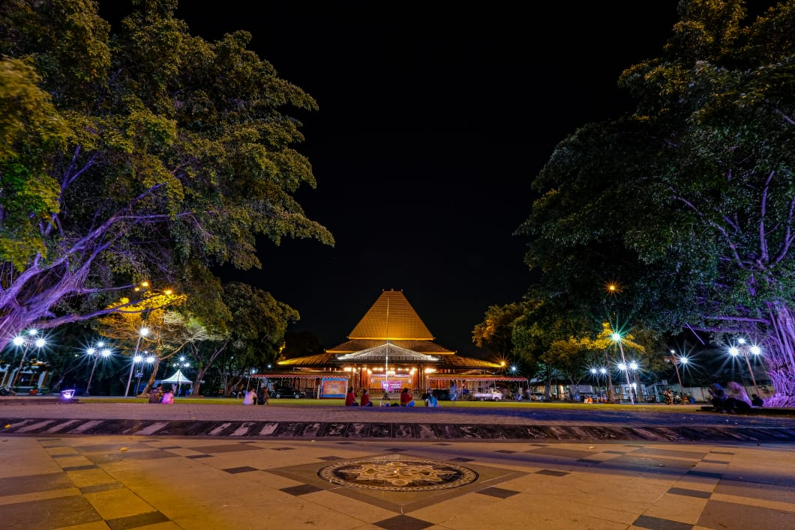
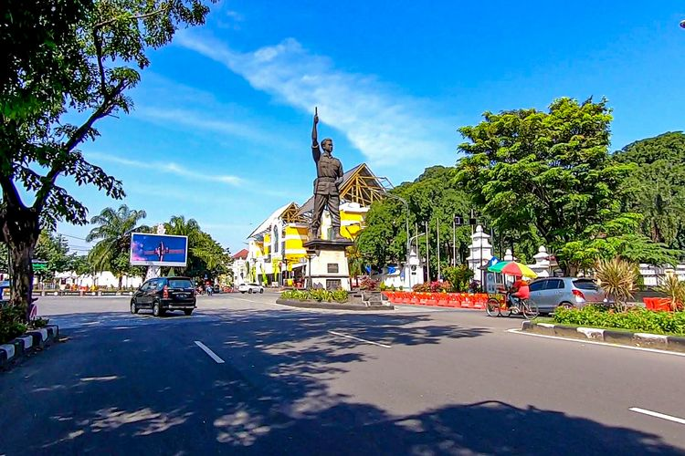

Sejarah Kota Surakarta

Sejarah Kota Surakarta atau biasa disebut Solo dimulai ketika Keraton Kartosuro mengalami kehancuran akibat serbuan dari pemberontak Kerajaan Mataram.Raja Pakubuwana II saat itu tengah mencari lokasi baru untuk menjadi pusat pemerintahan dan memilih Sala. Namun, namanya diganti menjadi Surakarta Hadiningrat. Saat ini, nama Surakarta biasanya digunakan dalam situasi formal-pemerintahan, sedangkan nama Sala/Solo biasanya lebih merujuk pada penyebutan umum yang dilatarbelakangi oleh aspek kultural.
Kondisi Geografis

Wilayah Kota Surakarta merupakan dataran rendah dengan ketinggian ± 92 m dari permukaan laut. Kota Solo berbatasan di sebelah utara dengan Kabupaten Boyolali, sebelah timur dengan Kabupa-ten Karanganyar, sebelah selatan dengan Kabupaten Sukoharjo dan di sebelah Barat dengan Kabupaten Sukoharjo. Luas wilayah Kota Surakarta mencapai 44,04 km² yang terbagi dalam 5 kecamatan, yaitu : Kecamatan Laweyan, Serengan, Pasar kliwon, Jebres dan Banjarsari. Sebagian besar lahan dipakai sebagai tempat pemukiman sebesar 65%, Sedangkan untuk kegiatan ekonomi juga memakan tempat yang cukup besar juga yaitu berkisar antara 16% dari luas lahan yang ada.